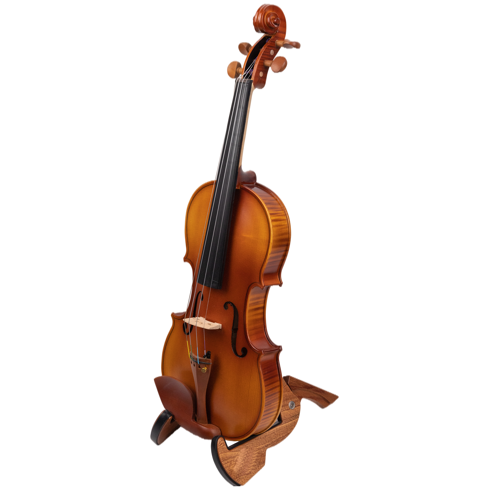

Guilherme Alexander,
Violinista e professor
Em 2015 Guilherme começou a tocar violino através do projeto social Movsinfo, e em 2016, iniciou seus estudos no instrumento no Centro Suzuki de Brasília com o professor Márcio Gomes. Atualmente, Guilherme da aulas e toca em eventos
Entre em contato
